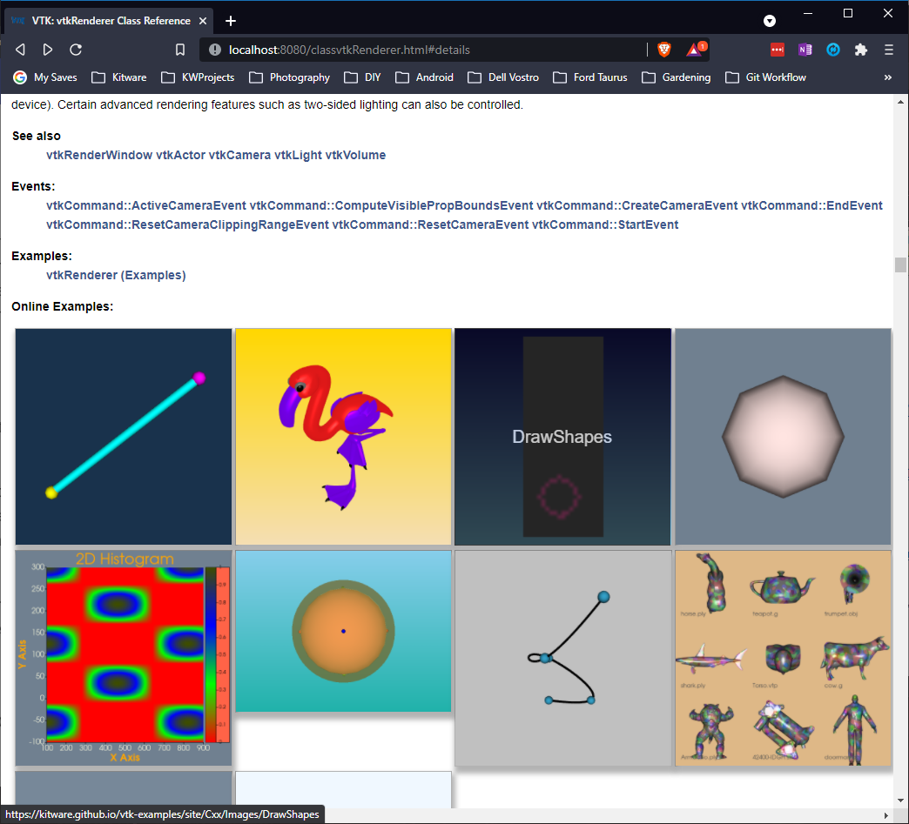
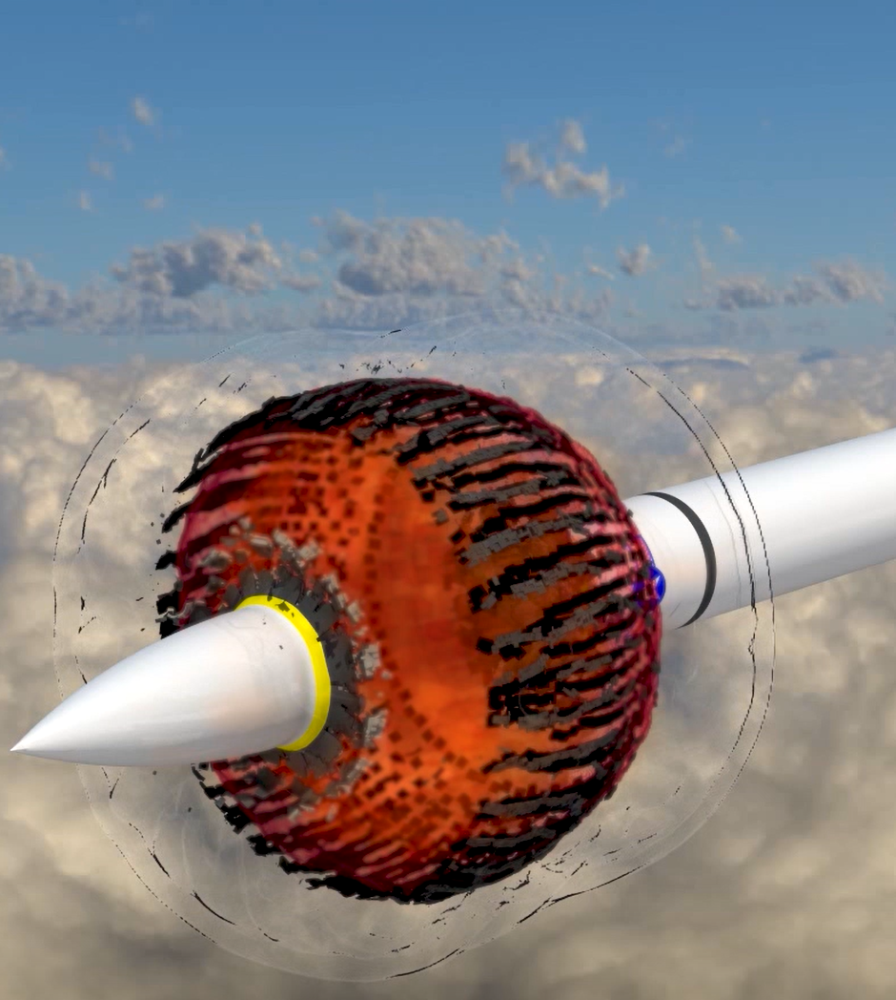
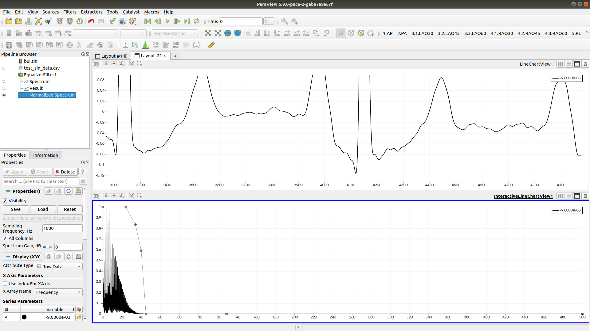
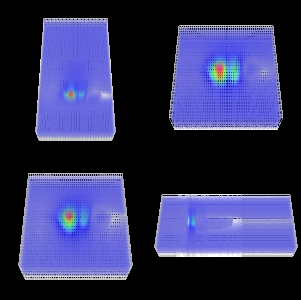
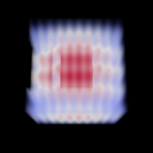
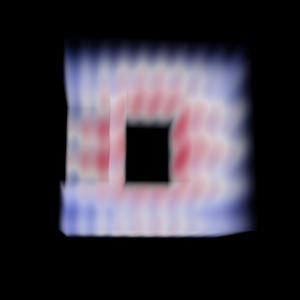

9.1#
Released on 2021-11-04.
9.1.0 Release Notes#
Changes made since VTK 9.0.0 include the following.
Changes {#changes}#
Charts {#charts}#
vtkChartXYZnow applies matrix transformations in the right order (see issue 17542)
Data {#data}#
The node numbering for
VTK_LAGRANGE_HEXAHEDRONhas been corrected to match the numbering ofVTK_QUADRATIC_HEXAHEDRONwhen the Lagrange cell is quadratic. Readers can internally convert data to the new numbering with XML file version 2.2 and legacy file version 5.1. The(0, 1)edge is swapped with the(1, 1)edge:
quadratic VTK_QUADRATIC_HEXAHEDRON
VTK_LAGRANGE_HEXAHEDRON VTK_LAGRANGE_HEXAHEDRON
before VTK 9.1 VTK 9.1 and later
+_____+_____+ +_____+_____+
|\ :\ |\ :\
| + : + | + : +
| \ 19 + \ | \ 18 + \
18 + +-----+-----+ 19 + +-----+-----+
| | : | | | : |
|__ | _+____: | |__ | _+____: |
\ + \ + \ + \ +
+ | + | + | + |
\ | \| \ | \|
+_____+_____+ +_____+_____+
vtkPolyData::ComputeBounds()used to ignore points that do not belong to any cell which was not consistent with othervtkPointSetsubclasses. See [ParaView issue #20354][paraview-issue20354]. The previous behavior is available throughvtkPolyData::ComputeCellsBounds()andvtkPolyData::GetCellsBounds()(usually for rendering purposes).
Filters {#filters}#
The
VTK::FlowPathsandVTK::ParallelFlowPathsfilters now use avtkSignedCharArrayrather than avtkCharArraysince the latter is ambiguous as to whether it is signed or unsigned. This affects theprotectedAPI available to subclasses and the usage of the output’sParticleSourceIdpoint data array.vtkStaticCellLocator::FindCellsAlongLine()now uses a tolerance for intersections with boxes.The tolerance used in
vtkStaticCellLocatoris now retrieved from the locator’s tolerance rather than relying on the size of the dataset. Previous behavior may be restored using theUseDiagonalLengthToleranceproperty.vtkTubeFilternow increases the radius of tubes linearly with respect to the norm of the input vector when the radius is selected to vary by the vector’s norm.vtkArrayCalculatorhas been updated to use C++ containers rather than raw pointers.vtkArrayCalculatorno longer supports the olddotsyntax by default and thedot()function must be used instead.vtkArrayCalculatorcan now useexprtkto parse expressions (the new default). This brings in functionality, but cannot define functions that return vectors.vtkArrayCalculator’s input variable names must now be sanitized or quoted.
I/O {#io}#
There is a new
VTK::IOChemistrymodule which contains chemistry-related readers. Moved classes:vtkCMLMoleculeReader: fromVTK::DomainsChemistryvtkGaussianCubeReader: fromVTK::IOGeometryvtkGaussianCubeReader2: fromVTK::IOGeometryvtkMoleculeReaderBase: fromVTK::IOGeometryvtkPDBReader: fromVTK::IOGeometryvtkVASPAnimationReader: fromVTK::DomainsChemistryvtkVASPTessellationReader: fromVTK::DomainsChemistryvtkXYZMolReader: fromVTK::IOGeometryvtkXYZMolReader2: fromVTK::IOGeometry
vtkOpenFOAMReaderno longer supports theincludecompatibility keyword (deprecated in 2008).vtkOpenFOAMReaderno longer treatsuniformFixedValueas special. Proper support requires logic that would require VTK to use OpenFOAM libraries.vtkOpenFOAMReaderno longer supports OpenFOAM 1.3 cloud naming (deprecated in 2007).
Rendering {#rendering}#
vtkVolumeMapperand its subclasses now acceptvtkDataSetinput, but ignore any type that is not avtkImageDataorvtkRectilinearGrid(or their subclasses). Derived classes may need toSafeDownCastif the input is assumed to bevtkImageData.OpenGL framebuffers are now handled using a
RenderFramebufferthat is internally managed rather than destinations such asBackLeftandFront. IfSwapBuffersis on, then theRenderFramebufferwill be blitted to aDisplayFramebuffer(twice for stereo rendering). ThevtkOpenGLRenderWindow::BlitToRenderFramebuffermay be used to blit the current read framebuffer to the render framebuffer to initialize color and depth data. ThevtkOpenGLRenderWindow::FrameBlitModeproperty may be set to control the following behavior:BlitToHardware: blit to hardware buffers (such asBACK_LEFT)BlitToCurrent: blit to the bound draw framebufferNoBlit: blitting will be handled externally
vtkTexture’s API now more closely matches OpenGL’s API. Instead ofRepeatandEdgeClampproperties,Wrapis provided using values such asClampToEdge,Repeat,MirroredRepeat, andClampToBorder. A border color may be selected when usingClampToBorder.
Java {#java}#
The
byte,short,long, andfloattypes may now be exposed in the wrapped Java APIs. The Java API now uses types as close as possible to the C++ types used in the wrapped API.
Python {#python}#
VTK now defaults to Python 3.x rather than Python 2.
The
VTK::WebPythonmodule no longer supports Python 2.Python 2.6, 3.2, and 3.3 are no longer supported. Python 3.6 or higher is recommended.
VTK’s web support now requires
wslink>=1.0.0. This slims down the dependency tree by dropping Twisted in favor ofasyncioandaiohttp.VTK’s wheels are now built via CI (rather than by hand). Wheels are available for:
Python versions 3.6, 3.7, 3.8, and 3.9
Platforms
manylinux2014,macos10.10, andwindowsPython 3.9 also supports
macos11.0arm64Official wheels do not use any external dependencies, but see
build.mdfor instructions on building custom wheels.
VTK object
repr()now shows the address of the underlying C++vtkObjectBaseand the Python object itself:<vtkmodules.vtkCommonCore.vtkFloatArray(0xbd306710) at 0x69252b820>.
VTK objects which are not derived from
vtkObjectBasenow have arepr()that shows the construction method (though this is dependent on how the backing type serializes itself, so it may not be 100% accurate; please file issues for types which look 「odd」):vtkmodules.vtkCommonCore.vtkVariant("hello")vtkmodules.vtkCommonDataModel.vtkVector3f([1.0, 2.0, 3.0])
Rendering {#rendering}#
vtkTextProperty::LineSpacingnow defaults to1.0rather than1.1.
Infrastructure {#infrastructure}#
VTK’s deprecation mechanism now marks specific APIs as deprecated so that compilers may warn about its usage. Clients still requiring older APIs can suppress warnings by defining
VTK_DEPRECATION_LEVELtoVTK_VERSION_CHECK(x, y, z)to suppress warnings about APIs deprecated afterx.y.z.
New Features {#new-features}#
Algorithms {#algorithms}#
vtkFFTis now available to perform discrete Fourier transformations.
Core {#core}#
The
vtkGaussianRandomSequence::GetNextScaledValue(),vtkMinimalStandardRandomSequence::GetNextRangeValue(), andvtkRandomSequence::GetNextValue()APIs have been added to avoid the->Next(),->GetValue()ping-ponging.vtkVariant::ToString()andvtkVariant::ToUnicodeString()now support formatting and precision arguments when processing numerical values or arrays.
Charts {#charts}#
vtkChartMatrixmay now sharexand/oryaxes between charts using theLink(c1, c2)andUnlink(c1, c2)methods. Labels for the axes may be set using theLabelOuter(leftBottom, rightTop)method.vtkChartMatrixnow supports nestedvtkChartMatrixitems.vtkChartMatrix::PaintandvtkChartMatrix::GetChartIndexmethods have been refactored to use an iterator-based API.vtkChartXYZnow resizes dynamically with the scene by managing its margins). Manual calls toSetGeometryis no longer necessary.vtkChartXYZnow supports removing plots.vtkChartXYZcan now turn off its clipping planes to avoid disappearing plots when zooming in.vtkChartXYZcan now zoom the axes along with the data.vtkChartXYZnow supports axes labels.vtkChartXYZnow usesvtkTextPropertyfor its text rendering.
Data {#data}#
vtkDataObjectTypes::TypeIdIsAmay be used to determine if a type is the same as or a specialization of another type.vtkDataObjectTypes::GetCommonBaseTypeIdmay be used to find the first common base class of two types.vtkPartitionedDataSetCollectionandvtkDataAssemblyhas been introduced to represent hierarchical datasets rather thanvtkMultiBlockDataSetandvtkMultiPieceDataSet. The newvtkConvertToPartitionedDataSetCollectionfilter can be used to convert any dataset into avtkPartitionedDataSetCollectionwithvtkDataAssemblyrepresenting any hierarchical organization within avtkMultiBlockDataSet. Converting back may be performed withvtkPConvertToMultiBlockDataSetorvtkConvertToMultiBlockDataSet.vtkUnstructuredGrid::GetCellis now thread-safe.
Documentation {#documentation}#
VTK’s Doxygen documentation now cross-references pages with the vtk-examples website to examples using the class. Images for the classes are now embedded into the class documentation as well.

Geometry {#geometry}#
The
vtkCellAPI now includes support for the 19-node-pyramid namedvtkTriQuadraticPyramid. Along with the addition of this API, several filters, readers and tests have been updated to incorporatevtkTriQuadraticPyramid:Filters:
vtkCellValidatorvtkUnstructuredGridGeometryFiltervtkReflectionFiltervtkBoxClipDatasetvtkCellTypeSource
Readers:
vtkIossReader
Filters {#filters}#
vtk3DLinearGridPlaneCutterhas been updated to also handle cell data. Each triangle of the output dataset contains the attributes of the cell it originated from. Using this class should be faster than using thevtkUnstructuredGridCutteror thevtkDataSetCutterand should avoid some small projection error. ThevtkCutterhas also been updated to benefit from these changes.vtkMergeVectorComponentshas been added to theVTK::FiltersGeneralmodule which supportsvtkDataSetobjects and may be used to combine three arrays of components into a new output array. This filter supports multithreading viavtkSMPTools.vtkArrowSourcenow has an option to be placed and oriented around its center which makes placing it after scaling and rotation much easier.vtkDataSetSurfaceFiltercan now extract surfaces from all structured data sets includingvtkImageData,vtkStructuredGrid, andvtkRectilinearGridwhen they have blanked cells marked using a ghost array.vtkDataSetSurfaceFilterhas a 「fast mode」 which only considers the outer-most surface without considering external faces within the outer shell which is intended for rendering purposes.vtkExtractExodusGlobalTemporalVariablesnow supports field data arrays.vtkExtractEdgesnow supports aUseAllPointsto use a non-Locator-based strategy to skip selecting only the points which are used and instead assumes that all points will be present in the output.The
vtkGhostCellsGeneratorfilter is now available to generate ghost cells. It uses DIY for MPI communication internally and can handle anyvtkMultiBlockDataSet,vtkPartitionedDataSet, andvtkPartitionedDataSetCollectionthat is filled with the supported input dataset types includingvtkImageData,vtkRectilinearGrid,vtkStructuredGrid,vtkUnstructuredGrid, andvtkPolyData. Ghost cells are only exchanged with elements of the same type and are treated as the 「closest」 supported common ancestor class. Note thatvtkHyperTreeGridis not supported andvtkHyperTreeGridGhostCellsGeneratorshould be used for it instead.vtkGroupDataSetsFiltermay be used to combine input datasets into avtkMultiBlockDataSet,vtkPartitionedDataSet, orvtkPartitionedDataSetCollection. Each input is added as an individual block and may be named usingSetInputName.vtkGroupTimeStepsFiltermay be used to turn temporal data into a singlevtkMultiBlockDataSetorvtkPartitionedDataSetCollectionwith all of the temporal data. The output type isvtkPartitionedDataSetCollectionunless the input isvtkMultiBlockDataSetin which case anothervtkMultiBlockDataSetis output.vtkVortexCore’s output points now include interpolated variables of the input points.vtkVortexCoreis now fully multithreaded usingvtkSMPTools.vtkMergeTimeFiltermay be used to synchronize multiple input temporal datasets. The output is avtkMultiBlockDataSetwith one block per input element. The output timestep may be either a union or intersection of the input timestep lists (which may be de-duplicated with either absolute or relative tolerances).vtkResizingWindowToImageFiltermay be used as an alternative tovtkWindowToImageFilterto create screenshots of any size and aspect ratio using theSetSize(width, height)method regardless of the window size. Note that offscreen buffers are used and therefore memory usage is higher thanvtkWindowToImageFilter. Memory usage may be limited using theSetSizeLimit(width, height)method (defaulting to(4000, 4000)). For images larger than the limit the filter will fallback tovtkWindowToImageFilterin order to save memory.vtkExtractVectorComponentscan now work multithreaded usingvtkSMPTools.vtkPartitionedDataSetCollectionSourceis now available to programmatically produce avtkPartitionedDataSetCollection.vtkThresholdPoints::InputArrayComponenthas been added to enable selection of a single component within the active data array. If a value larger than the number of components is used, the magnitude of each array tuple will be used.vtkTubeBenderis now provided in order to generate better paths for tubes invtkTubeFilter. This is particularly visible when generating tubes around acute angles.vtkArrayCalculatornow supports multithreading viavtkSMPTools.vtkVectorFieldTopologymay be used to compute the topological skeleton of a 2D or 3D vector field given as a set of critical points and separatrices. Separatrices are lines in 2D and surfaces in 3D (computed viavtkStreamSurface).vtkTableFFTnow offers a frequency column in the output table.vtkTableFFTcan now compute the FFT per block and then average these results.vtkTableFFTcan now apply a windowing function before computing the FFT.vtkMergeCellscan now merge points using double precision tolerances.vtkTemporalPathLineFiltercan now manage backwards times using itsSetBackwardTime()method. When using backwards time, eachvtkDataObject::DATA_TIME_STEP()from subsequent::RequestData()method calls will decrease.vtkPlaneCutterused to always generate a vtkMultiBlockDataSet regardless of input type. NowvtkPlaneCutterdecides what the output type will be based on the input type.If input type is
vtkUniformGridAMRorvtkMultiBlockDataSet, the output type will bevtkMultiBlockDataSet.If input type is
vtkPartitionedDataSetCollection, the output type will bevtkPartitionedDataSetCollection.If input type is
vtkDataSetorvtkPartitionedDataSet, the output type will bevtkPartitionedDataSet.
The
RemapPointIdsfunctor ofvtkRemoveUnusedPointshas now been multithreaded properly. (#18222)
Imaging {#imaging}#
The
vtkImageProbeFilterworks likevtkProbeFilter, but is designed for image data. It usesvtkImageInterpolatorrather than cell and point interpolations. The filter supports SMP acceleration.
I/O {#io}#
VTK can now read ADIOS2 files or data streams using Fides. This can be provided as a JSON file containing the data model or Fides can generate its own data model automatically (see Fides documentation for details). Fides converts the ADIOS2 data to a VTK-m dataset and the
vtkFidesReadercreates partitioned datasets that contain either native VTK datasets or VTK VTK-m datasets. Time and time streaming is supported. Note that the interface for time streaming is different and requires callingPrepareNextStep()andUpdate()for each new step.The
vtkCONVERGECFDReaderhas been added to read CONVERGE CFD (version 3.1) files containing meshes, surfaces, and parcels as well as support for time series data. Each stream is considered its own block. Cell and point data arrays may be selected using theCellArrayStatusandParcelArrayStatusAPIs. Note that parallel support is not yet available.vtkEnSightGoldBinaryReadernow supports reading undefined and partial variables from per-node and per-element files.VTK’s EnSight Gold support can now read asymmetric tensors. This is not supported in EnSight6 files yet.
The
vtkIossReaderhas been added which supports reading CGNS and Exodus databases and files. The output is provided as avtkPartitionedDataSetCollectionwithvtkDataAssemblyrepresenting the logical structure. Note that not all CGNS files are supported; only the subset supported by the backing IOSS library. Eventually, thevtkExodusIIReaderwill be deprecated in preference for this reader.The
vtkMP4Writerwriter may be used to write H.264-encoded MP4 files on Windows using the Microsoft Media Foundation API. TheRateproperty is available to set the framerate and theBitRateproperty may be used to set the quality of the output.vtkOMFReadermay be used to read Open Mining Format files. The output is avtkPartitionedDataSetCollectionwith eachvtkPartitionedDataSetis one OMF element (point set, line set, surface, or volume).vtkOpenVDBWritermay be used to write OpenVDB files. MPI is supported by writing separate files for each rank. Temporal data is also written to a separate file for each timestep.vtkTGAReadermay be used to read TGA images.vtkPDBReadernow supports reading PDB files with multiple models.vtkPDBReadernow generates an array containing the model each atom belongs to.vtkVelodyneReadermay be used to read Velodyne AMR files.

vtkNrrdReadercan now read gzip-encoded compressed NRRD files.vtkOpenFOAMReadernow supports reading internal dimensioned fields.vtkOpenFOAMReadernow supports string expansion syntaxes from OpenFOAM v1806 (#include,<case>,<constant>,<system>).vtkOpenFOAMReadernow handles mixed-precision workflows much more robustly.vtkOpenFOAMReadernow handles multi-region cases without a default region.vtkOpenFOAMReadernow respects theinGroupsboundary entry for selection of multiple patches by group.vtkOpenFOAMReadernow properly handles empty zones and has basic support for face zones.vtkOpenFOAMReaderrespects point patch value fields using the correct visitation order.vtkOpenFOAMReaderno longer has hard-coded limits on polyhedral size.vtkOpenFOAMReadernow preserves uncollated Lagrangian information.vtkOpenFOAMReadernow avoids naming ambiguities for Lagrangian and region names using a/regionName/prefix for non-default regions.
Interaction {#interaction}#
A new 3D camera orientation widget. The widget’s representation is synchronized with the camera of the owning renderer. The widget may be used to select an axis or using its handles.
vtkSelectionNodenow supportsBLOCK_SELECTORSto select whole blocks from a composite dataset using a selector expression for hierarchy or an associatedvtkDataAssemblyforvtkPartitionedDataSetCollections.Interactive 2D widgets have been added (ported from ParaView). The
vtkEqualizerFilterandvtkEqualizerContextItemare now available using this feature.Source data:
After applying the filter:

VTK’s OpenVR’s input model has been updated to be action-based and supports binding customization within the OpenVR user interface. This includes controller labeling and user configuration.
vtkEventDatanow understands an 「Any」 device so that handlers can look for all events and do filtering internally. See merge request 7557 for an example of how to update custom 3D event handling.vtkResliceCursorWidgetnow refreshes when scrolling.Frustum selection of lines and polylines now only considers the line itself, not their containing area (i.e., they were treated as polygons during selection).
Selections of
vtkDataAssemblymay be limited to a subset of blocks using a collection of xpath selectors for the dataset.vtkChartXYZcan now be controlled using the arrow keys for rotation.vtkScalarBarActornow supports custom tick locations viavtkScalarBarActor::SetCustomLabels()andvtkScalarBarActor::SetUseCustomLabels().
Java {#java}#
Java 1.7 is now required (bumped from 1.6).
The wrapped Java API now handles strings more efficiently by handling encoding in the Java wrappers directly. No APIs are affected.
Python {#python}#
vtkPythonInterpreter::SetRedirectOutputcan be used to disable Python output tovtkOutputWindow.VTK now offers two CMake options for deployments that can help to handle Python 3.8’s DLL loading policy changes on Windows. This allows
import vtkmodulesto handlePATHmanipulations to ensure VTK can be loaded rather than relying onvtkpythonto do this work.VTK_UNIFIED_INSTALL_TREE: This option can be set to indicate that VTK will share an install tree with its dependencies. This allows VTK to avoid doing extra work that doesn’t need to be done in such a situation. This is ignored ifVTK_RELOCATABLE_INSTALLis given (there’s no difference there as VTK assumes that how VTK is used in such a case is handled by other means).VTK_DLL_PATHS: A list of paths to give to Python to use when loading DLL libraries.
Python wrappers will now generate deprecation warnings when the underlying VTK API is deprecated. Since Python silences
DeprecationWarningby default, the warnings must be allowed via:
import warnings
warnings.filterwarnings("default", category=DeprecationWarning)
With Python 3.6 and newer, VTK APIs marked with attributes that indicate that paths are expected will now support
pathlikeobjects.Wrapped Python APIs now contain docstrings with type hints as described in PEP 484. This will help with IDE tab completion and hinting.
VTK’s
vtkmodulespackage andvtkmodule now provide__version__attributes.The
vtkmodules.web.render_window_serializermodule may be used to additionally serializevtkPolyData,vtkImageData, andmergeToPolyDataoptionally using therequested_fields=['*']argument.
Qt {#qt}#
VTK now supports Qt6 using the
VTK_QT_VERSIONvariable. This may be set toAutoin which case the first of Qt6 or Qt5 found will be used.The
VTK::GUISupportQtQuickmodule has been added which supports the necessary integration classes as well as the QML module infrastructure required to import VTK into a QtQuick application.
Rendering {#rendering}#
The
vtkOutlineGlowRenderPassrenders a scene as a glowing outline. Combined with layered renderers this creates a very visible highlight without altering the highlighted object.VisRTX and OptiX now offer trace-level debugging information to determine why they may not be available.
vtkMultiBlockUnstructuredGridVolumeMapperhas been added to volume render the entirety of a multi-block unstructured grid without merging them.The physical-based render shader now supports anisotropic materials. This may be modified using the
AnisotropyandAnisotropyRotationproperties. Support for these values from a texture is also available.vtkBlockItemmay now resize itself based on the label specified. Additionally, options for the brush, pen, and text, padding, margins are available.Multi-volume ray-casting now supports shading.
vtkMatplotlibMathTextUtilitiesnow supports multi-line (using\n) and multi-column (using|separators) text.vtkTextPropertynow has aCellOffsetproperty to control the spaces between columns (in pixels).The GPU-based ray-casting volume mapper now supports rendering non-uniform rectilinear grids. Volume streaming via block partitioning is not yet supported.

vtkOpenGLMovieSpheremay be used to display spherical movies using OpenGL. Both regular 360° video and stereo 360° video is supported where stereo streams are split into left and right eye rendering passes. The video is sent to the graphics card as YUV textures which are decoded to RGB in the associated shaders.VTK’s VisRTX support is now compatible with OSPRay 2.0.
The OpenGL
vtkPolyDatamappers now provide a way to handle jitter introduced by rendering with single-precision vertex coordinates far from the origin. ThePauseShiftScaleparameter may be used to suspend updates during user interactions.vtkResliceCursorRepresentation::BoundPlane()is now offered to show the entire resliced image when rotating.vtkOpenGLPolyDataMappernow supports avtkSelectionobject to display selected ids or values directly from the mapper itself. Selections are rendered in a second pass as a wireframe using thevtkProperty::SelectionColorcolor.The GPU-based ray-casting volume mapper now supports direct volume rendering with the blanking of cells and points defined by individual ghost arrays.
Uniform grid with blanking:

Image data with ghost cells and points:

Volume rendering may now use independent scalar arrays for the
xandydimensions of 2D transfer functions.
Web {#web}#
render_window_serializer.pynow supports serialization of avtkRenderWindowthat containsvtkVolume,vtkVolumeProperty, orvtkVolumeMapper.
SMP {#smp}#
vtkSMPTools::For()can now be used on iterators and ranges. This can be especially useful for containers that are not indexed such asstd::mapandstd::set.vtkSMPTools::LocalScopemay be used to call avtkSMPToolsmethod with a specific configuration within a scope. The configuration structure takes a maximum thread number and/or a backend.vtkSMPToolsnow has anSTDThreadsbackend which uses C++』sstd::thread.vtkSMPTools::TransformandvtkSMPTools::Fillmay be used as replacements forstd::transformandstd::fill.Multiple backends may now be compiled into VTK at build time rather than a separate build per backend. The default may be selected using the
VTK_SMP_IMPLEMENTATION_TYPECMake variable or theVTK_SMP_BACKEND_IN_USEenvironment variable at runtime. Enabling a backend is controlled by theVTK_SMP_ENABLE_<backend>CMake variable at build time.The
VTK_SMP_MAX_THREADSenvironment variable is now available to limit the number of threads any SMP task will use.vtkSMPToolsnow supports nested parallelism using theNestedParallelismproperty (defaults tofalse) and theIsParallelScopequery to detect such scoping.
Wrapping {#wrapping}#
Wrapped classes no longer require a
vtkprefix.Hierarchy files are used exclusively for type checking.
The wrapping tools now keep an internal cache of which header files exist where on the system to avoid repeated lookups when resolving
#includesearch paths.
模組系統 {#module-system}#
The
vtk_module_add_module(NOWRAP_HEADERS)argument may be used to list public and installed headers which should not be exposed for wrapping purposes.The
vtk_module_add_module(NOWRAP_CLASSES)argument may be used to list class names for which the headers are treated asNOWRAP_HEADERSarguments.The
vtk_module_add_module(HEADER_DIRECTORIES)argument may be used to indicate that the relative path of headers from the current source or binary directory should be preserved upon installation.The
vtk_module_install_headers(USE_RELATIVE_PATHS)argument may be used to indicate that the relative path of headers from the current source or binary directory should be preserved upon installation.The
vtk_module_build,vtk_module_wrap_python, andvtk_module_wrap_javaAPIs now support aUTILITY_TARGETargument. The target named using this argument will be privately linked into every library created under these APIs. This may be used to provide compile or link options to every target. Note that the target given must be installed, but it may be installed with the same export set given to any of these APIs.The module system now supports target-specific components using the
vtk_module_build(TARGET_SPECIFIC_COMPONENTS)argument.
Infrastructure {#infrastructure}#
VTK plans to hold to a new minor (or major) release every six months with releases in or around April and October each year.
VTK now uses GitLab-CI for testing.
OSPRay support now detects Apple’s Rosetta translation environment and refuses to run due to the environment not supporting instructions used within OSPRay.
vtkGetEnumMacroandvtkSetEnumMacroare now available to work withenum classproperties.VTK now requires CMake 3.12 to build and to consume. This is mainly due to the usage of
SHELL:syntax to properly support some MPI use cases.vtkSOADataArrayTemplatecompilation should use less memory now that its template instantiations are split into separate TU compilations.The
VTK_TARGET_SPECIFIC_COMPONENTSoption may be specified to provide target-specific installation components.
Third Party {#third-party}#
An external
iosslibrary may now be provided to VTK’s build.An external
pegtllibrary may now be provided to VTK’s build.exprtkis now included in VTK (an external copy is supported).fmtis now included in VTK (an external copy is supported, though VTK requires patches which have been merged upstream but not yet released).VTK’s embedded third party packages have been updated:
cli112.0.0eigen3.3.9exodusII2021-05-12expat2.4.1freetype2.11.0glew2.2.0hdf51.12.1jpeg2.1.0libxml22.9.12lz41.9.3lzma5.2.5mpi4py3.0.3netcdf4.8.0ogg1.3.5pugixml1.11.4sqlite3.36.0tiff4.3.0
Deprecated and Removed Features {#deprecated-and-removed-features}#
Legacy {#legacy}#
Some APIs had been deprecated for a long time. The following APIs are now removed.
vtkDataArrayTemplate(deprecated since Dec 2015)vtkObjectBase::PrintRevisionsandvtkObjectBase::CollectRevisions(deprecated since 2012)VTK___INT64andVTK_UNSIGNED___INT64(deprecated since Mar 2017)vtkArrayCalculator::SetAttributeMode*andVTK_ATTRIBUTE_MODE_*macros (deprecated in Jun 2017)vtkContourGrid::ComputeGradients(deprecated in Dec 2018)vtkSMPContourGridManyPieces,vtkSMPTransform,vtkThreadedSynchronizedTemplates3D, andvtkThreadedSynchronizedTemplatesCutter3D(deprecated in Sep 2017)vtkAbstractImageInterpolator::GetWholeExtent(deprecated in Mar 2016)vtkImageStencilData::InsertLine(an overload) (deprecated in Nov 2014)The
RemoveBlockVisibilitesmethod fromvtkCompositeDataDisplayAttributes,vtkCompositeDataDisplayAttributesLegacy, andvtkCompositePolyDataMapper2(deprecated in Jul 2017)vtkOpenVRPropPicker(deprecated in Apr 2018)
Core {#core}#
vtkLegacy.handVTK_LEGACY_REMOVEare now deprecated andvtkDeprecation.hand its mechanisms should be used instead.Building with kits is no longer supported with static builds. Since the goal of a kit build is to reduce the number of runtime libraries needed at startup, a static kit build does not make much sense. Additionally, some dependency setups could not be resolved in such a build (as witnessed by ParaView) and a proper fix is not easy, so disabling the support makes more sense at this time.
The
vtkToolkits.hheader provided preprocessor definitions indicating some features within VTK’s build. However, these were inaccurate in single-configure builds since the information was not available when the header was configured.VTK_USE_VIDEO_FOR_WINDOWS: now available invtkIOMovieConfigure.hVTK_USE_VFW_CAPTURE: now available invtkIOVideoConfigure.hasVTK_USE_VIDEO_FOR_WINDOWS_CAPTURE, but the old name is given for compatibility.
vtkUnicodeStringandvtkUnicodeStringArrayare now deprecated since VTK, since 8.2, has assumed UTF-8 for all string APIs. As such,vtkUnicodeStringandvtkUnicodeStringArraydid not provide any additional information. Users which used them to convert UTF-8 to UCS-2 for Windows API usages should instead useVTK::vtksys’sSystemToolsAPIs for converting such strings.vtkAtomicis removed in favor ofstd::atomic. As such,vtkAtomic.handvtkAtomicTypeConcepts.hare no longer provided.Threading-related classes are now deprecated in favor of C++11 standard library mechanisms.
vtkConditionVariable:std::condition_variable_anyvtkCriticalSection:std::mutexvtkMutexLock:std::mutexvtkSimpleConditionVariable:std::condition_variable_anyvtkSimpleCriticalSection:std::mutexvtkSimpleMutexLock:std::mutexvtkThreadMessanger:std::mutexandstd::condition_variable_any
vtkSetGet.hno longer includes<math.h>.vtkVariant.hmethodsIs__Int64andIsUnsigned__Int64were marked deprecated, though they have been unconditionally returning false since 2015.
Filters {#filters}#
vtkDataSetSurfaceFilterno longer supports generation of triangle strips. ThevtkStripperfilter may be used to generate them if needed.vtkConfigure.his now deprecated and split into more focused headers. The headers which now contain the information:vtkBuild.h:VTK_BUILD_SHARED_LIBSvtkCompiler.h: Compiler detection and compatibility macros.vtkDebug.h:VTK_DEBUG_LEAKSandVTK_WARN_ON_DISPATCH_FAILUREvtkDebugRangeIterators.h:VTK_DEBUG_RANGE_ITERATORSandVTK_ALWAYS_OPTIMIZE_ARRAY_ITERATORSvtkEndian.h:VTK_WORDS_BIGENDIANvtkFeatures.h:VTK_ALL_NEW_OBJECT_FACTORYandVTK_USE_MEMKINDvtkLegacy.h:VTK_LEGACY_REMOVE,VTK_LEGACY_SILENT, andVTK_LEGACYvtkOptions.h:VTK_USE_64BIT_IDSandVTK_USE_64BIT_TIMESTAMPSvtkPlatform.h:VTK_REQUIRE_LARGE_FILE_SUPPORTandVTK_MAXPATHvtkSMP.h:VTK_SMP_${backend}andVTK_SMP_BACKENDvtkThreads.h:VTK_USE_PTHREADS,VTK_USE_WIN32_THREADS,VTK_MAX_THREADSAlso includes
VTK_THREAD_RETURN_VALUEandVTK_THREAD_RETURN_TYPE, butvtkMultiThreader.his guaranteed to provide this.
Old ghost cell filters are deprecated in favor of
vtkGhostCellsGenerator.vtkUnstructuredGridGhostCellsGeneratorvtkPUnstructuredGridGhostDataGeneratorvtkStructuredGridGhostDataGeneratorvtkPStructuredGridGhostDataGeneratorvtkUniformGridGhostDataGeneratorvtkPUniformGridGhostDataGenerator
vtkThreshold’sThresholdByLower(),ThresholdByUpper(), andThresholdBetween()methods are deprecated in favor ofvtkThreshold::LowerThreshold,vtkThreshold::UpperThreshold, andvtkThreshold::ThresholdFunctionproperties.
Python {#python}#
Python 2 support, which reached its end-of-life in January 2020 is deprecated.
Soft deprecations {#soft-deprecations}#
Some groundwork has been laid down to deprecate existing classes with new features in this release, but have not been formally deprecated yet. Users are encouraged to use the new APIs to help ensure that the transition when they are deprecated is smoother.
vtkMultiBlockDataGroupFilterusage should be replaced byvtkGroupDataSetsFilter.vtkMultiBlockFromTimeSeriesFilterusage should be replaced byvtkGroupDataSetsFilter.vtkExodusIIReaderusage should be replaced byvtkIossReader.The random number APIs from
vtkMathshould be moved tovtkGaussianRandomSequenceorvtkMinimalStandardRandomSequenceas needed.